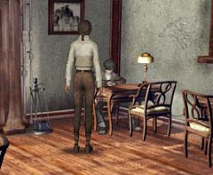

| 概要 | 地図 | |
| 淡いヒント集 | ヒント集 | 的確なヒント集 |
| 攻略最短ルート | Syberia 攻略へ |
| 地域選択へ | 次の段階へ >> |
バラディレーン
ホテル
葬儀の行列を見た後、ホテルに入る。ホテルに入ったときにやらなければならないことは、 ・ホテルの支配人の呼び出し ・ホテルに届いているオフィスからの書類を受け取る ・オフィスへ電話 ・オフィスからのFAXを受け取る ・モモの絵を調べる ということである。
呼び出しベル
 ・まずはホテルの人間を呼ばなければならない。呼ぶにはこのベルを鳴らす必要がある。 ・このカラクリ人形は、ゼンマイ式である。ゼンマイを回す鍵が近くに置いてあるはずだ。 ・ゼンマイを巻いたら、ボタンを押せば人形はベルをたたくだろう。 ホテルのカウンター
 ・ホテルのカウンターにはFAXがある。 ・いろいろな情報を仕入れるのならば、支配人は頼りになる存在である。 ・分からないことは積極的に聞いてみるべきだ。 ・電話を借りる必要はない。自分で持っているはずだ。
モモの絵
 ・モモは絵を描いていた後、投げ出して外に出ていくはずだ。そうすれば絵は見られる。 ・絵以外にも何か重要なものが落ちているだろう。拾っておくべきだ。 |
| 地域選択へ | 次の段階へ >> |
| 概要 | 地図 | |
| 淡いヒント集 | ヒント集 | 的確なヒント集 |
| 攻略最短ルート | Syberia 攻略へ |
Syberia
| 目次へ戻る | ページの上部へ |